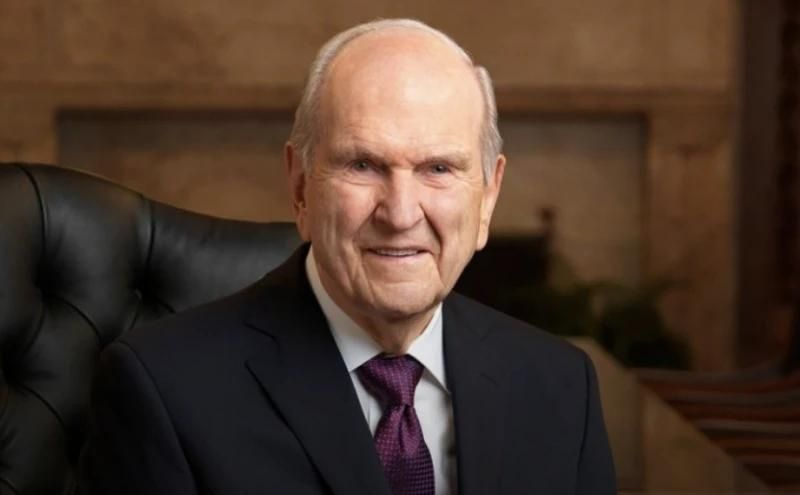

Welcome to The Living Prophet
Discover the invitations and blessings from President Russell M. Nelson.
Recent Invitations and Promised Blessings
"[Jesus Christ] made this stunning promise: “I will manifest myself to my people in mercy in this house.”
This significant promise applies to every dedicated temple today. I invite you to ponder what the Lord’s promise means for you personally."
– President Russell M. Nelson
Rejoice in the Gift of Priesthood Keys, April 2024
Read More